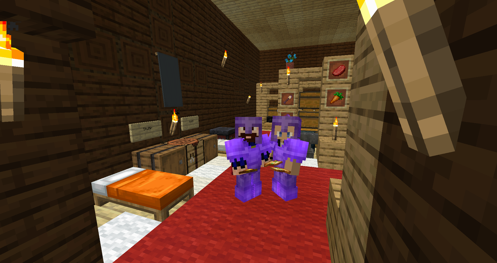
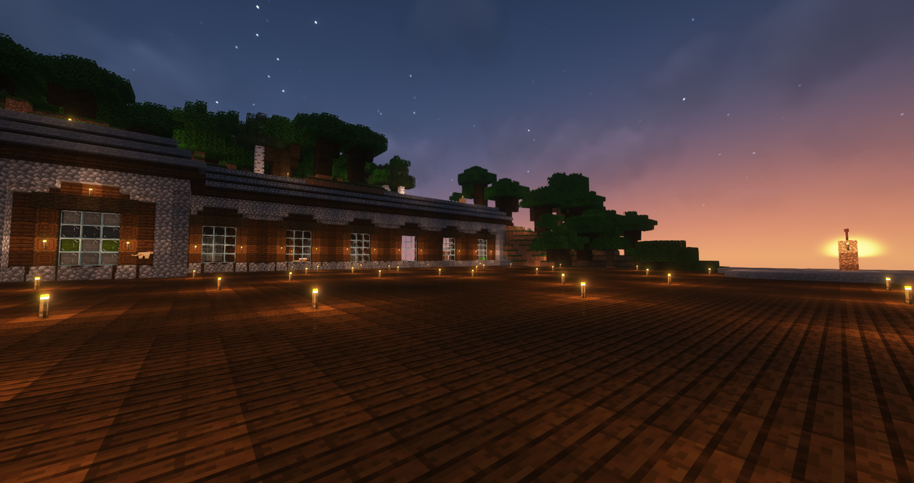
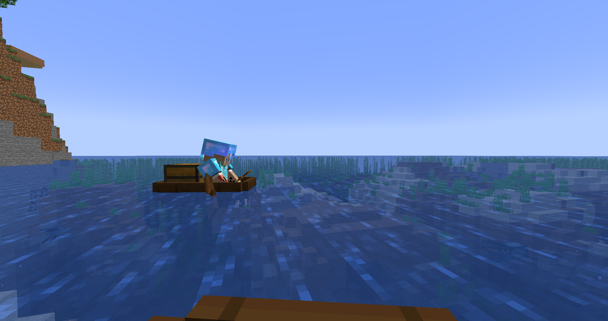
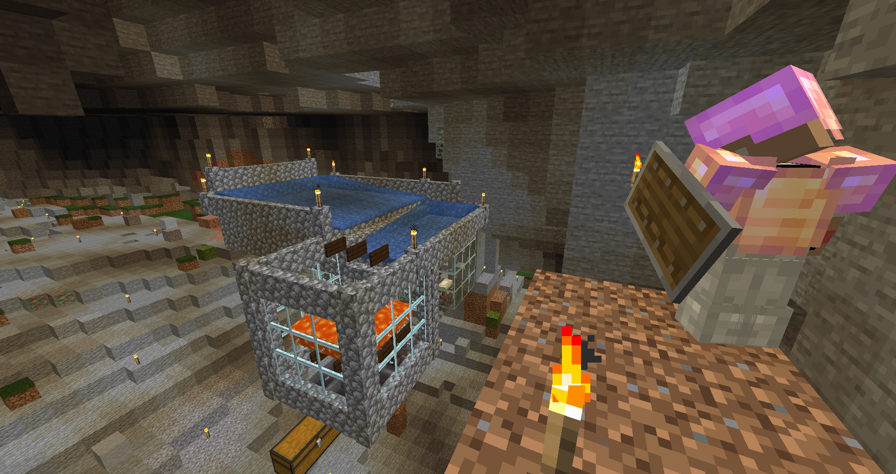

CFUK Minecraft Challenge Server
The Adventure Begins, Jun 19, 2022

Starting in the challenge server can be hard, believe me just look at the hall of shame in the discord server!!
We have all been there.
So this is my story of how I defeated the dragon (with a little help from my friends).
At first spawn the first thing I did was get a tree for wood, this is the usual way to play that everyone knows, from here it just goes way off. I made a boat, Yes
you read that right, a boat.
Taking to the open sea like a pirate on a quest, I was travelling to team up with our one and only greatest
Big hearted stud of the server nand.
Travelling to meet nand I was raiding a few villages and portal ruins to gather food and armour and tools. When I got the village with nand, we chatted about what to do next.
THE PLAN = we didn't really have one. We just set off in a direction and continued to raid what we could. We did laugh about a finding a mushroom island would be a great start but finding one, as we all know, is harder then you think. So we did what any two pirates did drank sea water, brushed our teeth twice a day and studied hard in school. WAIT!!! Where was I? Ah yes, we had been travel for days on the open seas then all of a sudden these two pirates lucked out and hit the booty big time when they rounded a corner to be faced with a Woodland Mansion. The excitement, the thrill, nand was out of his boat and swimming for shore faster than he could shout "I'm having that".

Now the plan we had imagined started to come into play. The thing with nand and myself we are always on same page or close enough, we bounce off well together
without really saying anything.
This was it, our new home. We took a room upstairs, where we placed our travel items and started to get to work, taking over the mansion one section at a time.
We played it real slow and from safety lured the monsters into our reach. In time we had done it, success.
We started turning this dreary dull place into our luxury home. It doesn't come without its ups and downs like when I decided to make lava source.
When nand and I took a step back to admire it the place bursts into flames. Two floors and the roof, just gone. Nand turns into Firenand Sam, while I grabbed a bucket and ran towards the sea,
getting lost coming back while in full panic mode. We repaired as best at the time. We luckily have some birch trees outside which I grew and fixed the floors up. After that we were extra careful.
This is why you don't play with fire, kids.

We decided to venture out to undiscovered lands, we made a packed lunch and went looking for a village to bring some villagers back to breed and make our farms automatic, this was a huge step up.
My collecting/hoarding paid off eventually when we made a mini trading hall inside the mansion and I got to use all the tables pillaged from the villages along the way.

Together with a shiny new iron farm we had nearly everything we needed.
Realising that we wanted potions and Netherite if we were to reach our objective we would have to venture into the Nether.
Nand built a portal room, we activated the portal and jumped in fingers crossed. It looked like an unlucky spot (I have seen worse spots to spawn) we elegantly left as soon as we went in.
At this point the only XP we were getting was through trading with villagers. This worked out well as we realised we could buy & sell very quickly to get emeralds to buy armour.
Nand used his new armour to go explore the nether he found a fortress and the delight of the blaze spawner. Gathering materials to build a farm which we would then use for further XP.
For the next few days/weeks its was on, we were determined, getting the enchanting books ready and grinding out the XP. Nand had found a few bits of debris while making tunnels.
Nand had decided to make a area for debris mining so we bought a chest of disposable pickaxes from the villager and went to town. Another big step, Check that off the list!!
Before the big fight nand and myself played through all the scenarios we could think of what could go wrong, right and that we can control, a few dry runs later we exchanged out results and came up with the plan.
Packed all the items for our trip, took a pee, and got in the boat. Previously nand had found and cleared out the stronghold making indicators through the maze of hallways.
This was it we each took half of the eyes of Ender and placed into slots one by one said good luck and jumped in.
To our amazement we had spawned in the middle of the ring of towers it took us both a wee second to realise the dragon wasn’t there.
The panic of how to get back set in.
Luckily Raelon and heckatonckires were listening in on the chat and with their suggestions we logged out and back in again.
Yeah!! We spawned at 0,0 world spawn!
We dusted ourselves off as travelled back to the safe house for a breather and a slice of cake.
TUNE IN NEXT TIME!!